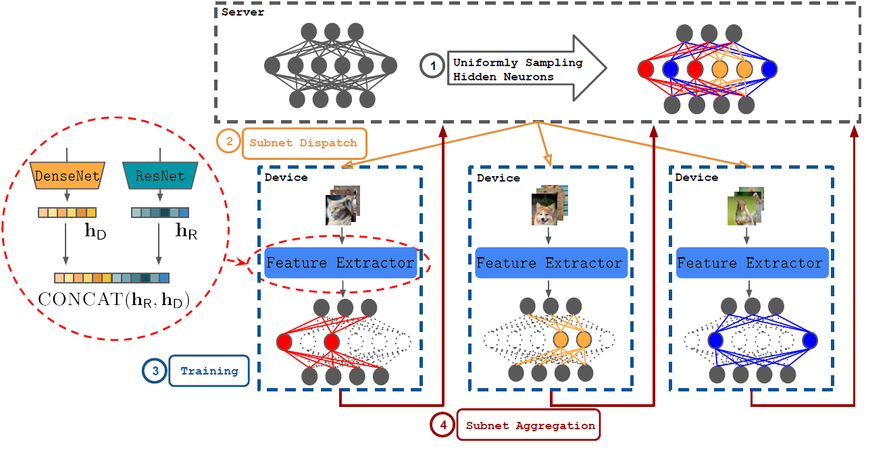

Federated Learning Over Images: Vertical Decompositions and Pre-Trained Backbones Are Difficult to Beat
Erdong Hu1, Yuxin Tang1, Anastasios Kyrillidis1, Chris Jermaine1,
1Rice University
Abstract
We carefully evaluate a number of algorithms for learning in a federated environment, and test their utility for a variety of image classification tasks. We consider many issues that have not been adequately considered before: whether learning over data sets that do not have diverse sets of images affects the results; whether to use a pre-trained feature extraction "backbone"; how to evaluate learner performance (we argue that classification accuracy is not enough), among others. Overall, across a wide variety of settings, we find that vertically decomposing a neural network seems to give the best results, and outperforms more standard reconciliation-used methods.
Overview
In the cross-device setting of federated learning, device resources, in particular computation and communication, are often limited making standard full training of the model infeasible. Distributed gradient descent, equivalent to centralized stochastic gradient descent, achieves high accuracy but at the cost of expensive computation and communication. Consequently, final accuracy alone does not make sense in a federated setting. A common approach is to evaluate accuracy over communication rounds; however, this approach inherently favors algorithms which performs more computation per round, which again does not make sense in a federated setting. We instead consider accuracy as a function of both communication cost (Bytes tranferred) and computation cost (Floating point operations used) to more fairly and realistically benchmark federated algorithms. Moreover, a common benchmark for evaluation is CIFAR-100. This dataset includes a very diverse set of classes - whales, chairs, dinosaurs, etc. However, we are concerned few federated tasks will involve differentiating whales from chairs. We argue instead that it makes more sense to evaluate on a very broad range of datasets, in our case primarily from the fine-grained classifcation task. Additionally, retuning hyperparameters, e.g. learning rate, proximal weights, batch size, architecture, etc., is expensive in this resource-constrained environment and therefore we propose that off-shelf tuned performance is a more realistic setting. We present a set of benchmarks and experiments in the federated learning setting. First we demonstrate that pre-trained feature extractors are a necessary baseline in federated learning as fully training a model is drastically more expensive in comparison. Similarly, we find that decomposition methods such as IST achieve generally lower bytes transferred and FLOP for the same threshold accuracy across most datasets. While we do not propose any particular algorithm, our results suggest a combination of pre-trained backbones and vertical decomposition (FedVert) perform well in this resource-constrained federated learning setting.

Experimental Setup
For the pre-trained backbone we concatenate the output features of two CNNs pre-trained on the ImageNet dataset, ResNet101 and DenseNet121, together. For most algorithms evaluated we
train an MLP classifier layer with the pre-trained backbone features as inputs.
We evaluate on a diverse and broad range of image classification datasets: CUB-200-2011,
Stanford Cars, VGGFLowers,
Aircraft, Describable Textures,
CIFAR-100. These datasets are sampled to clients of our FL simulation by Dirichlet distribution.
For evaluation, we determine the highest convergent accuracy among algorithms and use 90% of this as the threshold accuracy. We measure the amount of FLOPs and bytes transferred needed for
each method to reach this threshold.
More details can be found in the paper.
Experimental Results
Our resulting model obtains the best performance on the task of weakly-supervised visual grounding compared to most methods under this setting and is comparable to several prior works that rely on some of box supervision. Moreover, our qualitative results show that our method can handle paraphrases and a larger vocabulary without the needed to increment the training dataset significantly.


BibTeX
@InProceedings{Hu_2023_ICCV, author = {Hu, Erdong and Tang, Yuxin and Kyrillidis, Anastasios and Jermaine, Chris}, title = {Federated Learning Over Images: Vertical Decompositions and Pre-Trained Backbones Are Difficult to Beat}, booktitle = {Proceedings of the IEEE/CVF International Conference on Computer Vision (ICCV)}, month = {October}, year = {2023}, pages = {19385-19396} }